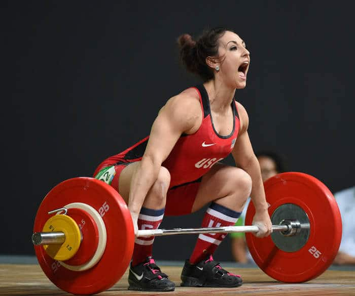

| Documentación | Información | Ejemplos | Librerias |
|---|
La halterofilia o levantamiento de pesas olímpico es un deporte que consiste en el levantamiento del máximo peso posible en una barra en cuyos extremos se fijan discos encauchetados con ciertos pesos, que son los que determinan el peso final que se levanta. A esto se le suman los seguros o collarines y este conjunto se denomina palanqueta.Existen dos modalidades de competición: arranque y dos tiempos o envión. En la primera de ellas se trata de levantar las pesas, de una vez y sin interrupción, desde el suelo hasta la total extensión de los brazos sobre la cabeza. En la segunda se ha de conseguir lo mismo, pero se hace una interrupción del movimiento cuando la barra se halla a la altura de los hombros.
